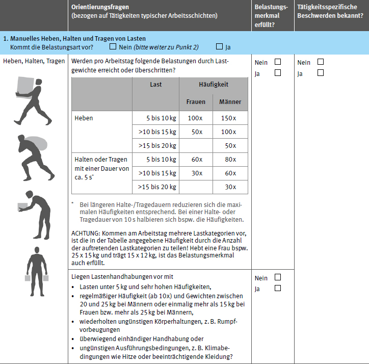
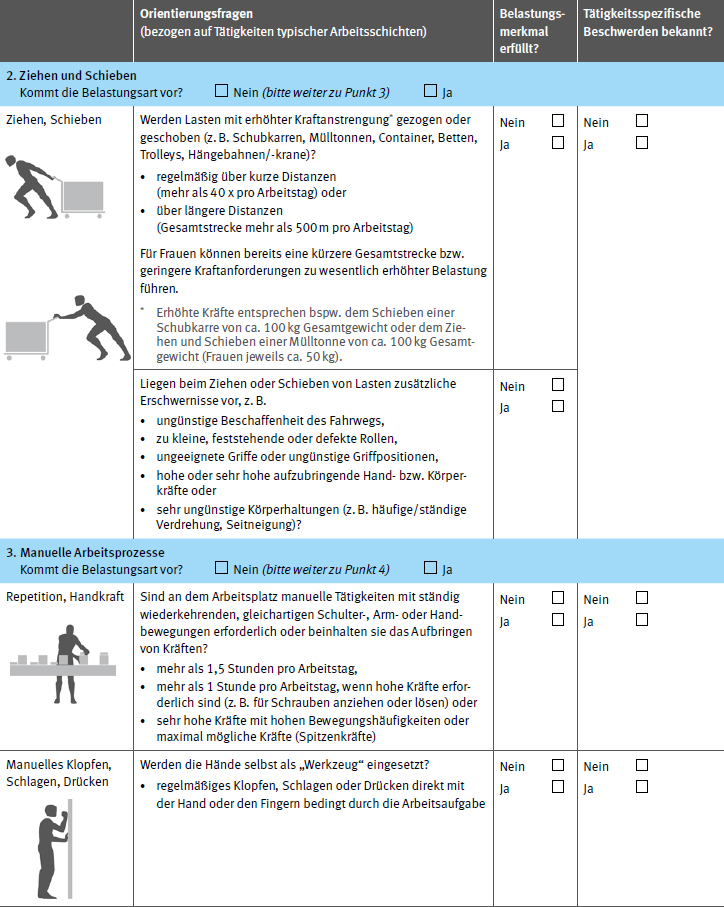
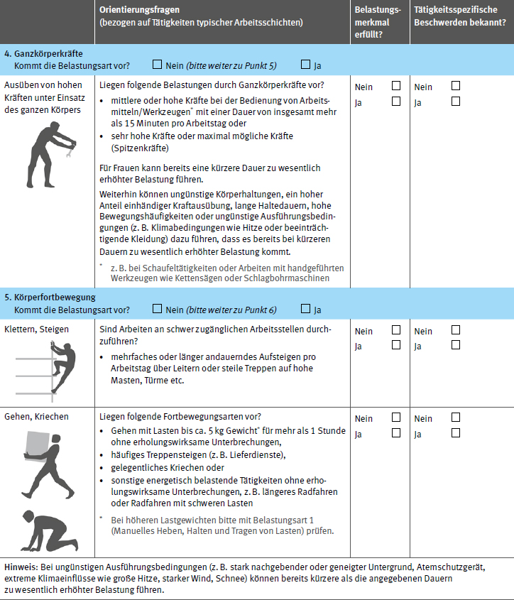
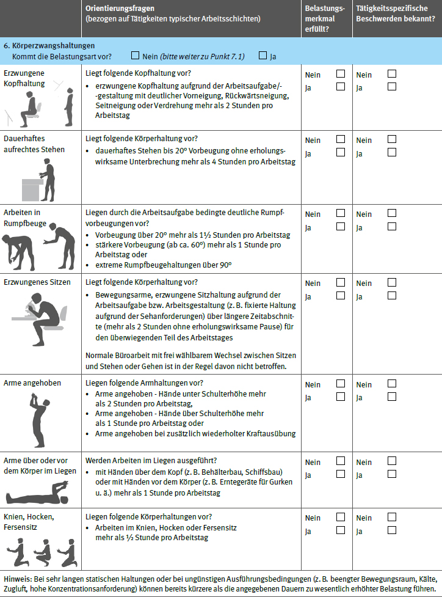
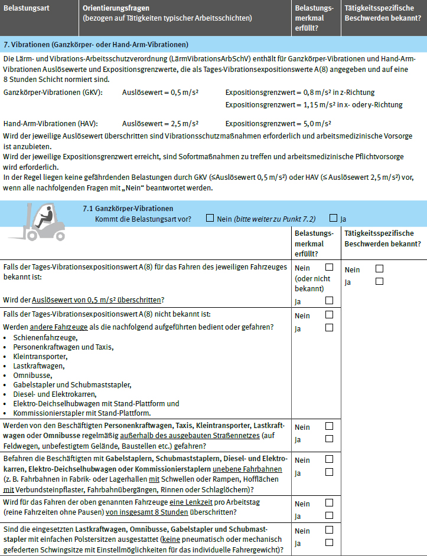
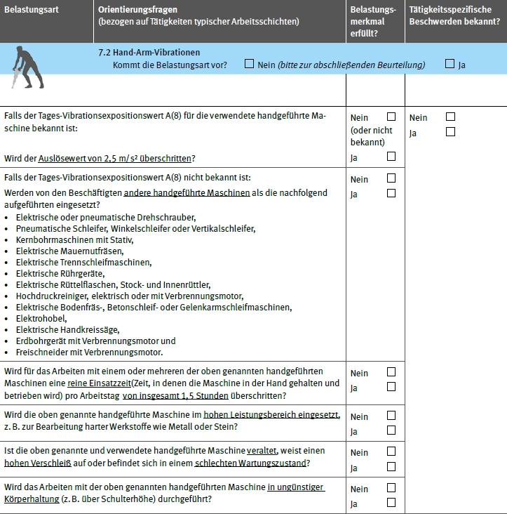
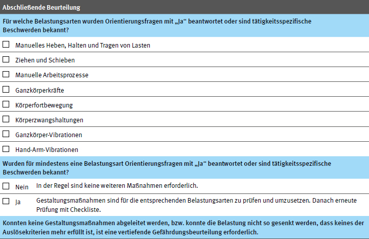

Hinweis: Die Checkliste zur orientierenden Gefährdungsbeurteilung bei Belastungen des Muskel-Skelett-Systems wird derzeit mit dem Einstiegsscreening der BAuA abgeglichen. Eine harmonisierte Version erscheint 2022.
Checkliste für Unternehmerinnen und Unternehmer, Sicherheitsbeauftragte* , Betriebsärztinnen und Betriebsärzte* und Fachkräfte* für Arbeitssicherheit
|
Diese Checkliste hilft Ihnen bei der Entscheidung darüber, welche körperlichen Belastungsarten am Arbeitsplatz eine Gefährdung für den Beschäftigten beinhalten können. Auffälligkeiten in dieser Checkliste weisen deshalb nur auf ein mögliches Risiko hin und sind noch kein Nachweis eines tatsächlichen Gesundheitsrisikos. Allerdings sollte bei diesen Auffälligkeiten eine ergänzende Gefährdungsbeurteilung durchgeführt werden, für die umfangreichere Screeningverfahren wie beispielsweise Leitmerkmalmethoden genutzt werden können. Die Checkliste ist für Personen konzipiert, die nicht zum Kreis der besonders Schutzbedürftigen zugeordnet werden können und sie kann unkompliziert im betrieblichen Setting (oder Umfeld) angewendet werden. Für besonders Schutzbedürftige (Jugendliche, Leistungsgewandelte, Schwangere, Personen mit Vorerkrankungen etc.) muss eine für sie jeweils spezifische Gefährdungsbeurteilung durchgeführt werden. |
Beantworten Sie bitte – soweit am Arbeitsplatz zutreffend – die Fragen der Checkliste. Wenn Sie zusätzlich über betriebliche Informationen zu tätigkeitsspezifischen Beschwerden oder erhöhten Beanspruchungen von Beschäftigten verfügen (gehäufte Schmerzen, ärztliche Befunde, Krankschreibungen), ergänzen Sie Ihre Aussagen damit.
Nach Bearbeitung der Checkliste kann eine abschließende Beurteilung erfolgen, ob und für welche Belastungsarten die Anwendung eines geeigneten Verfahrens zur Gefährdungsbeurteilung physischer Belastungen erforderlich ist. Insgesamt gilt:
| Checkliste bearbeitet durch: | Datum:_____________________ |
| ________________________________ (Unternehmerin/Unternehmer) | Betriebsbereich/Arbeitsplätze/Tätigkeit: |
| ________________________________ (Führungskraft) |
________________________________ |
| ________________________________ (Fachkraft für Arbeitssicherheit) | ________________________________ |
| ________________________________ (Betriehsärztin/Betriebsarzt) | ________________________________ |
* gemäß Beauftragung durch Unternehmerin/Unternehmer






